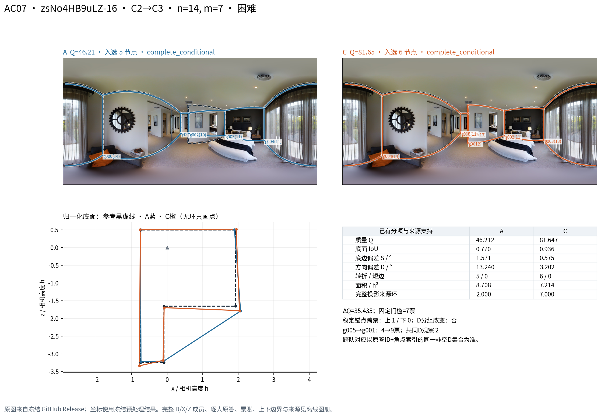

当前 DSTRUCT 直接替换 AC：六方向规律、机制与最终收尾
版本：2026-11-04；研究范围：当前 DSTRUCT K3，普通 Manual 原目标为主，其它准入目标独立列示。固定来源为 GitHub main 48a2fc6aedd51cd701b1bce06c02bd3ef92ec75b 与已验收第 08–12 批增量。此报告对应第 13–15 批。
一、主要结论与本轮新增认识
当前合法存量及有界补缺支持：固定图片、参考、n/m 和共同背景后，C2→C3 是两个核心预算中覆盖最广、方向最一致的升质方向；C1→C2 平均改善但异质性明显；C1→C3 在大替换块上的容量很少，在已有较小半队预算上反而有更广的正向证据。 反向替换在相同物理队对上就是相反的效应，不能再计成独立验证。六方向核心表、全部实际预算
这轮最有解释力的结果有五项。
- C2→C3 并非只在困难图有效。 20/7 的简单层有 57 图，56 图严格为正，平均 +3.933；困难层的平均为 +9.633，绝对变化 16.075，明显大于简单层 3.997。困难结构主要放大变化和分项权衡，不能概括为每张困难图都提高。
- 多数变化不需要节点数变化。 20/7 C2↔C3 的 1,829 个共同 Q 对中，1,632 对节点数相同；其中仍有 127 对绝对 Q 变化超过 10 分。角点定位、底边、方向、范围和高度需要逐项看。
- 局部实际票数跨越固定门槛与较大变化相联系。 事先固定的机制样本中，14/7 和 20/7 的检测跨票组平均绝对变化分别为 23.663、24.815；未检测跨票组为 3.716、3.059。相同预算内名义门槛从未改变。跨票也有降质和小变化实例。
- 质量提高不等于记录劳动减少。 合法同源、同 Q/T 支持的 20/7 C2→C3，全队记录劳动平均增加 121.050 秒，Q +4.406；也有质量提高且劳动不增加的图片。其它大预算类对无合法共同时间支持，不作快慢判断。
- 高分集中能解释变化幅度受压，不能解释全部“同类比跨类变化大”。 本轮高分组变化更小；但第 12 批既有 ABC 中三端均未达 90 分的反例仍存在，并有实际结构差别。两种现象应同时保留。

本轮已经完成事件审计、必要端点补算、指标接续、全量统计、原生机制重放和原图展示。没有重新开展联盟、固定配比、人数曲线、RFUSE、JOINT、Q/T 选队或严格 ABC 实验。 下文所有结论均能追到逐事件、逐团队或逐图文件；没有用少数案例代替总体结果。
二、版本、类别与旧团队如何保留
2.1 版本优先关系
开始时最新 main 与第 08–12 批冻结底座相同。08–12 批的后续解释、图册和 C1↔C3 补充存在于已交付增量，不声称已包含在该 main 提交中。当前类别、有效预处理、池资格、目标参考、投票和评分使用固定 main；历史团队保留自身 source_commit、事件和设计身份；本轮新增结果独立登记。版本说明、核心输入 Git blob 核验、执行合同
当前 DSTRUCT 的类别含义可沿用第 08–09 批画像：C1 倾向于困难结构较简化且近共线冗余偏多，C2 为常规结构表达，C3 保留较多局部转折和短墙。这是对原答行为的解释，不是给每个人贴永久的质量等级。实际归类始终依据目标图片所属建筑的 LOBO 标签，不能用 ALL 描述名单代替。既有类别—原答—团队表
2.2 逐成员审计的结果
历史 TARGET 与当前 DSTRUCT 的 1,426 个“人员×折”行中，34 个目标建筑 LOBO 行变类；ALL 行变类 0，known 资格变化 0。审计没有凭旧 TARGET 名称整体接纳，也没有因这 34 行变化废弃全库。
| 审计层次 | 数量与处理 |
|---|---|
| 旧 TARGET 方法事件 | 52,544；原身份完整保留 |
| 不满足本轮固定 n、等 m | 15,473；保留历史结果，不进入本轮 AC |
| 等人数事件 | 37,071 |
| 当前 X/Z 混类或成为同类 | 8,651；不重命名成当前跨类 AC |
| 当前合法物理 AC 对 | 28,420；45,162 支去重团队；206 图、22 楼 |
| 原目标部分 | 26,809 对；205 图、22 楼 |
| 其它准入目标部分 | 1,611 对；19 个目标池、17 图、6 楼；不混入主目标 |
| 当前合法但方向改变 | 43；7 个旧 C1→C3 映射为 C1→C2，36 个映射为 C2→C3 |
| 背景 D 为混类 | 16,364 个合法事件；保留 |
| 背景 D 含当前未知标签 | 152 个合法事件；保留并逐人记录；可与混类计数重叠 |
| 背景 D 为空 | 2,390；单列为空背景，不能解读为背景影响 |
| 仍有至少一个原特定设计成立 | 23,358 |
| 只满足一般当前 AC | 5,062；保留，但不沿用失效的纯背景/富集背景等原设计主张 |
来源：全事件合法性、原设计逐链接验收、原条件复用与排除表、排除理由。各理由表按自身单位计数，不把重叠理由相加为独立事件。
这 28,420 对属于存量团队上的当前标签条件分析。 它们不是按当前类别重新均匀抽出的人员样本；筛选可改变团队、背景及图片的分布。原特定设计、仅通用 AC、D 类构成和来源分层分别保留，作为解释条件。
第 12 批已有严格 ABC 的 A/C、B/C 腿另复用 4,096 个不同物理直接对、4,992 支团队。两端都有 Q 即可用于直接腿分析，不误用 ABC 的三端/四端要求；原 ABC 估计没有重算。这一来源不混入下文“存量＋缺口补充”的主效应，研究台可独立查看。腿别名与去重
三、真实容量与本轮实际补算
一般混合背景 AC 至少要求来源类人数和目标类人数各不小于 m，池总人数不小于 n+m；还需逐池核对资格和人员互斥。它不要求两块同来源人员，因此不能套用严格 ABC 的容量约束。
在原有核心预算 14/7 与 20/7，每个预算的原目标可行图数都是 C1↔C2 44、C1↔C3 7、C2↔C3 84；当前合法旧事件仅覆盖 39、4、81。两个预算合计 22 个容量可行但缺少合法旧比较的格，涉及 7 图、4 楼。全部逐图容量、核心容量与复用
补充选择在读取新团队 Q、GT 效果之前固定，种子 202611041301。每格 32 个不重复物理对，尽量选择 16 个不同 X/Z 块，再从其余成员均匀取 D；容量较少的格使用 8 或 1 个可行块，分别增加 D 的实现。所有块、背景、当前类别人数与成员均保存。冻结后独立重建每次抽取，结果一致。设计合同、全部补充事件、独立选择验收
实际运行 704 个新 AC 对、1,408 支不同团队。已登记的 18 类缓存来源共检查 739,534 个团队键行，没有这些请求的精确端点命中，因而执行原生融合：1,388 支有 Q、20 支无连接，形成 684 个共同 Q 对。缓存检索范围在文件中明确，没有声称查遍未登记的任意实验。坐标、参考、类别、评分和原始顺序规则保持，新增人工连接数为 0。缓存核验、运行回执、最终验收
三来源合计 35,524 条方法/腿别名、33,220 个不同物理对、51,562 支不同团队。方法事件、物理对、团队、图片与建筑是不同计数，不能互相替代。完整别名、物理对底表
本轮不为填满每个预算扩实验。比如 50% 直接替换，C1↔C3 的 14/7 可行 7 图，16/8 已无可行图；C2↔C3 的 16/8 可行 12 图，18/9 无可行图。其它目标的容量与缺口独立列出，未额外组队。容量为零、容量可行但未在本轮研究预算补充、已登记但无共同 Q，是三种不同状态。
四、六方向：有符号结果、幅度与支持
Q 为正式 B8L2（0–100），相对于本池当前采用的参考评分；D10与3D IoU另列。图名相同但目标或参考不同的比较分别记录。下表为 普通 Manual 原目标、自动版、当前合法存量＋22格补缺。先在同图内汇总；旧存量按不同物理对等权，补缺按固定 X/Z 块内先平均 D、再平均块；最终图片等权。另有建筑等权、留一建筑和按楼聚类 2,000 次自助区间。区间是条件于这些存量及补缺图片的稳定性描述，不消除人员选择或建筑覆盖限制。统计合同、独立汇总验收
“改善/小变化/下降”分别指图片平均 ΔQ>1、−1≤ΔQ≤1、ΔQ<−1。±1 是阅读尺度，不是显著性或业务达标门槛；原表同时给严格正负及 ±0.5/±2。平均绝对 ΔQ 是先对物理对取绝对值再按规定权重汇总，不是平均 ΔQ 的绝对值。
4.1 14 人换 7 人：50%
| 方向 | 图等权平均ΔQ | 按楼聚类95%区间 | 平均绝对ΔQ | 图/楼 | 改善/小变化/下降图 |
|---|---|---|---|---|---|
| C1→C2 | +2.776 | [+1.209, +3.587] | 5.380 | 44/13 | 22/15/7 |
| C2→C1 | -2.776 | [-3.587, -1.209] | 5.380 | 44/13 | 7/15/22 |
| C1→C3 | +2.590 | [-0.914, +5.717] | 3.613 | 7/5 | 3/3/1 |
| C3→C1 | -2.590 | [-5.717, +0.914] | 3.613 | 7/5 | 1/3/3 |
| C2→C3 | +6.190 | [+4.262, +8.209] | 7.475 | 83/21 | 71/7/5 |
| C3→C2 | -6.190 | [-8.209, -4.262] | 7.475 | 83/21 | 5/7/71 |
4.2 20 人换 7 人：35%
| 方向 | 图等权平均ΔQ | 按楼聚类95%区间 | 平均绝对ΔQ | 图/楼 | 改善/小变化/下降图 |
|---|---|---|---|---|---|
| C1→C2 | +2.033 | [+0.680, +3.028] | 4.131 | 44/13 | 21/17/6 |
| C2→C1 | -2.033 | [-3.028, -0.680] | 4.131 | 44/13 | 6/17/21 |
| C1→C3 | +2.097 | [+0.252, +3.407] | 2.489 | 7/5 | 4/3/0 |
| C3→C1 | -2.097 | [-3.407, -0.252] | 2.489 | 7/5 | 0/3/4 |
| C2→C3 | +4.484 | [+2.937, +6.317] | 5.731 | 84/21 | 62/19/3 |
| C3→C2 | -4.484 | [-6.317, -2.937] | 5.731 | 84/21 | 3/19/62 |
六方向全部展示，但每一行与它的反向行来自同一物理对。区间也精确镜像。三个类对的可行图片不同，因此表中不能做“C1→C2 加 C2→C3 等于 C1→C3”的传递推断；两个预算的背景和团队支持也不同，不能把 6.190→4.484 直接解释成提高/降低替换比例的受控效应。
建筑等权下，14/7 三个正向类对分别为 +2.158、+1.617、+5.740；20/7 为 +1.427、+1.552、+4.020。两个核心预算的平均方向保持。C1↔C3 仍只有 5 楼、7 图，14/7 区间跨零；这些容量事实与方向发现一起报告。
4.3 C1↔C3 不只有七张图的证据
七图限制对应 m=7。已有当前合法旧 AC 在较小半队块上仍有以下支持，本轮没有为此新组队：
| n/m | 共同Q物理对 | 图/楼 | 平均ΔQ | 严格正/负图 | 按楼聚类95%区间 |
|---|---|---|---|---|---|
| 6/3 | 138 | 37/17 | +9.295 | 35/2 | [+6.123, +12.139] |
| 8/4 | 245 | 26/10 | +15.417 | 24/2 | [+4.994, +24.336] |
| 10/5 | 77 | 20/7 | +8.596 | 19/1 | [+4.039, +10.186] |
这支持“当前存量的若干较小半队条件下，C1→C3 经常升质”，而不是“C1/C3 无法比较”。不同 n/m 行涉及不同图片、成员及背景，不能拼成一条受控人数/比例曲线。
4.4 核心条件真实分母
| n/m | 类对 | 登记对→共同Q对 | 登记不同团队→共同Q不同团队 | 登记图→共同Q图 |
|---|---|---|---|---|
| 14/7 | C1↔C2 | 401→388 | 799→773 | 44→44 |
| 14/7 | C1↔C3 | 116→111 | 232→222 | 7→7 |
| 14/7 | C2↔C3 | 670→638 | 1337→1274 | 84→83 |
| 20/7 | C1↔C2 | 1056→1039 | 2054→2021 | 44→44 |
| 20/7 | C1↔C3 | 139→139 | 278→278 | 7→7 |
| 20/7 | C2↔C3 | 1882→1829 | 3753→3647 | 84→84 |
所有预算及其它目标的六方向均在完整表中保留。研究台明确显示有支持、稀少支持或无共同 Q；容量清单另外标注无可行条件。完整可下载表不是只保留上述表现较好的预算。全部六方向、输出状态、去重端点状态
五、差异在什么图片条件下放大
5.1 难度与结构：C2→C3 的幅度变化最清楚
20/7、C2→C3 的相同主口径：
| 图片条件 | 图/楼 | 平均ΔQ | 平均绝对ΔQ | 严格正/负图 | 下降超过1分图 |
|---|---|---|---|---|---|
| 中等 | 17/11 | +3.304 | 5.461 | 14/3 | 3 |
| 困难 | 10/7 | +9.633 | 16.075 | 7/3 | 0 |
| 简单 | 57/20 | +3.933 | 3.997 | 56/1 | 0 |
| 边界自遮挡 | 12/8 | +9.893 | 15.290 | 9/3 | 0 |
| 无短转折且无边界自遮挡 | 65/19 | +3.639 | 4.000 | 62/3 | 2 |
| 短转折、无边界自遮挡 | 7/6 | +3.064 | 5.416 | 6/1 | 1 |
困难层 7 图正、3 图负，但 3 张负图均在 1 分以内；这一点不能写成困难层常出现大幅下降。困难层平均绝对变化大，表示不同团队实现的波动也大；平均方向和波动幅度必须同时说明。边界自遮挡与困难类别部分重叠，这两个分层不是两项相互独立的原因。
C1→C2 没有相同的单调难度模式：20/7 简单 32 图平均 +0.613、绝对变化 2.523；中等 6 图 +9.852、11.575；困难 6 图 +1.790、5.264。因此不能把“困难越高变化越大”推广到每个类对。完整层表保留图数、楼数、负例及分项。条件统计、条件分项
5.2 用途：可描述的重复现象与小格边界
同一 20/7 C2→C3 条件：
| 用途 | 图/楼 | 平均ΔQ | 严格正/负图 |
|---|---|---|---|
| 储藏与家务辅助 | 4/4 | +1.091 | 3/1 |
| 卧室 | 22/13 | +3.597 | 22/0 |
| 卫浴 | 16/9 | +4.744 | 14/2 |
| 厨房与用餐 | 6/5 | +2.313 | 4/2 |
| 工作与学习 | 3/2 | +3.228 | 3/0 |
| 开放复合空间 | 1/1 | +14.267 | 1/0 |
| 未登记 | 7/5 | +1.980 | 7/0 |
| 特殊用途 | 2/1 | -0.158 | 1/1 |
| 起居与休闲 | 9/8 | +6.745 | 8/1 |
| 通行与连接 | 14/11 | +7.515 | 14/0 |
卧室 22 图与通行/连接 14 图都严格为正，分别 +3.597、+7.515，说明正向现象并非只由某一类困难特殊场景驱动。特殊用途两图来自一楼，平均 −0.158，不能据此把整个用途定义为负向类别。用途×难度表已给出；多个交叉小格只有一两张图，展示其实际值，不强行宣称稳定模式。逐层逐图
5.3 高分集中：解释幅度，不替代具体几何
20/7 C2↔C3 中，两端 Q 都不低于 90 的 1,157 对（59 图、21 楼），平均绝对变化 2.064；至少一端低于 90 的 672 对（43 图、15 楼）为 11.012。同一图可以同时出现在两组，59 与 43 不能相加为不同图片。逐图固定 n/m/类对后，对称均值 M 与绝对差的 Spearman 相关平均 −0.280；84 图中 62 负、22 正。高分分层、同图相关
这些数值既包含质量量尺的边界，也包含实际几何差异。因为 Q∈[0,100]，令 M=(Q_A+Q_C)/2，有：
所以双端≥90时绝对差≤10是数学约束。它没有规定同类 B 与跨类 C 哪一个离 A 更远。第 12 批既有 jtcxE69GiFV-13 代表 A/B/C 为 72.914/82.144/72.322，节点4/6/4，该图原保存 GS=−3.7166；这不是双高分饱和，也有 B 保留额外转折的几何证据。GS 是既有逐图统计，不是该单个事件重新计算的值。既有 ABC 附录、原图三端对照

5.4 固定 X/Z 后，具体共同背景仍能改变方向
在已经计算的704个补缺比较中，固定同图、参考、n/m和同一X/Z，得到290个不同替换块；276块有至少两个共同Q背景。其中56块出现严格正负翻向，24块同时出现高于+1和低于−1的效应，分别涉及7图和5图。16块的输出状态随D改变，涉及3图。大多数可比较块在已观察背景中保持同一符号，背景变化没有抹去前述类别对的平均规律。逐块与逐图分析
更具体地，进一步固定D的类别人数后，120个可比较子组（108个不同XZ块、7图、4楼）中仍有18个严格翻向、9个跨±1。这说明差异不全部来自背景的类别比例，具体成员仍有作用。每块原先登记2、4或32个D，分别统计；观察机会越多越容易见到极端值，不能不加区分比较极差。
一个结果后选择、用于解释的最大跨度例是 q9vSo1VnCiC-30 的14/7 C2→C3。同一X/Z、两个D均为1名C1＋6名C2，D₁中Q85.130→81.090（−4.040），D₂中38.146→87.269（+49.123）。每个A/C内部D完全固定，只在两对之间换D成员；变化很大部分来自A端原有结构与定位的差别，不能只凭总分指定单一节点原因。两对的完整人员、四端几何、原图与分项随冻结实例和背景展示提供。这是已观察缺口队列的条件分析，不是新的配比实验或所有背景的总体发生率。
六、Q 以外：结构、位置和上下边界究竟改变什么
6.1 共同 Q 支持上的完整分项
20/7 C2→C3，以下分项均覆盖相同 84 图、1,829 个共同 Q 对：
| 指标 | 平均C−A | 解释 |
|---|---|---|
| 3D IoU（百分点） | +2.6915 | 增加 |
| 2D IoU（0–1） | +0.0231 | 增加 |
| 底边偏差（度） | -0.2523 | 减小 |
| 方向偏差（度） | -0.7083 | 减小 |
| 整体高度偏差 | -0.0044 | 减小 |
| 局部高度偏差 | -0.0028 | 减小 |
| 遗漏比例 | -0.0089 | 减小 |
| 扩展比例 | -0.0172 | 减小 |
| 有效转折数 | +0.2044 | 增加/减少本身不判优劣 |
| 短转折边数 | +0.0826 | 增加/减少本身不判优劣 |
| 近共线冗余点数 | +0.0033 | 描述数量 |
| 匹配参考上边界误差（度） | -0.2424 | 减小 |
| 匹配参考下边界误差（度） | -0.1843 | 减小 |
| 匹配参考水平位置误差（度） | -0.1374 | 减小 |
| 成功匹配参考角点比例 | +0.0298 | 增加 |
3D IoU 在83图提高、1图下降；底边偏差81图减小、3图增大；方向偏差71图减小、13图增大。平均转折只增加0.204个，而定位、方向与边界多图改善，说明总体变化不只是“多保留了几个点”。2D/3D范围与高度、上下边界也不应合并成一个结构数量解释。分项主表、逐图分项
匹配参考误差按冻结的9°角点匹配实现测量。成功匹配比例平均从0.929815到0.959650；匹配集合可能随输出变化，因此这些误差不等于固定同一组参考角点的位移。几何距离、未匹配数量和匹配比例都已保留。新端点的1,388个有Q结果已补齐这些诊断字段，不是重评分。
对 Q 的五个实际输入做所有替换顺序的精确平均分解，20/7 C2→C3 的 +4.484 可写为范围 +1.397、底边 +0.647、方向 +2.351、整体高度 +0.022、局部高度 +0.066。分解和实际ΔQ的最大数值残差小于9×10⁻¹⁴。这是评分公式的算术分解，不是五种独立干预的因果贡献，也没有把混合输入生成新物理团队。 逐对分解、汇总、验收
6.2 完整展示七张负向图
20/7 C2→C3 的77正、7负不能概括成全图提高。七张负图如下：
| 图片 | 难度 | ΔQ | Δ3D IoU百分点 | 方向偏差变化（度） |
|---|---|---|---|---|
| x8F5xyUWy9e-03 | 中等 | -4.726 | +2.450 | +0.836 |
| X7HyMhZNoso-19 | 中等 | -1.699 | +0.228 | +0.303 |
| jtcxE69GiFV-03 | 中等 | -1.367 | +0.825 | +0.483 |
| jh4fc5c5qoQ-04 | 困难 | -0.552 | +6.963 | +0.377 |
| X7HyMhZNoso-07 | 困难 | -0.448 | +2.845 | +0.859 |
| VFuaQ6m2Qom-04 | 困难 | -0.447 | +0.307 | +0.941 |
| uNb9QFRL6hY-56 | 简单 | -0.122 | +0.268 | +0.213 |
这七图的3D IoU仍全部增加，方向偏差全部增大。Q作为包含方向等损失的综合分数，与体积重叠的判断可以不同。只有三图下降超过1分，其余为小变化。该现象支持“几何分项存在权衡”，不应误写成负例没有任何几何改善，或因为IoU提高就忽略Q下降。精确公式分解还表明，六图的方向项贡献为负，但 VFuaQ6m2Qom-04 的图均方向误差虽增加，逐对计算后的方向项却贡献 +0.602，范围项 −0.669 与底边项 −0.401 使总Q为 −0.447；非线性评分不能从平均误差直接推断平均分数贡献。七图完整分解
6.3 节点相同仍可明显改变几何
20/7 C2↔C3 的1,829个共同Q对中1,632个节点数相同；261个超过10分变化的对中127个仍然同节点。14/7相应为638对中560同节点，135个大变化对中80同节点。这里是物理对频数，不能当成独立受试者数。同节点支持、同节点分项
原图案例 AC09（7y3sRwLe3Va-13，20/7 C2→C3）更直接：两端均4节点，每组20票，共同D的对应和连接保持；Q77.408→92.579、方向偏差3.873→1.865°，范围和上下边界同时改善。远端某底点只移动约0.82像素，投影位置已有可见差别。这展示投影敏感性；总分变化不能全部归因于这一点。案例全数据、局部定位图

七、票数、对应、连接和正反实例
7.1 机制样本先于结果选择
按固定哈希种子 202611041302，从合法旧存量每个池×类对×预算选一对，14/7、20/7各124对，共248对、496端点、116图、22楼；没有看Q、GT或成功状态选样。重放原团队只提取对应和票账，保存几何一致、最大评分差约7.1×10⁻¹⁴。案例展示另外补提取既有端点，最终保留508个历史端点，不是新增508个实验团队。样本合同、机制报告
跨团队不能直接匹配F编号。诊断以共同D人员的原始 object_id/source_pair_index 观察集合做锚点，只把同一非空D观察集合认作稳定对应；拆分、合并或重新对应单列。固定n时，名义MV50阈值分别为7或10，实际票数是否跨线另查。
| 预算 | 检测到跨票：共同Q对/登记对 | 跨票平均绝对ΔQ | 未检测跨票：共同Q对 | 未检测跨票平均绝对ΔQ | 至少10分变化的对（跨票/未检测） |
|---|---|---|---|---|---|
| 14/7 | 16/18 | 23.663 | 106 | 3.716 | 11/16；10/106 |
| 20/7 | 12/13 | 24.815 | 111 | 3.059 | 8/12；7/111 |
表中均值先在图内汇总、再图片等权；频数保留物理对分母。检测跨票与复杂结构、分组变化重叠，不能把该关联称为独立的票数因果效应。部分所选节点无法形成稳定D锚点，14/7涉及13对，20/7涉及18对；“未检测到”不保证歧义部分没有跨票。逐组映射、覆盖、分层关联
7.2 六个关键正反实例
| 例 | 图片与条件 | 观测事实 | 可采用的解释 |
|---|---|---|---|
| AC07 | zsNo4HB9uLZ-16；14/7 C2→C3，困难 | 局部票4→9，阈值仍7；5→6节点；Q46.212→81.647 | 恰当凹角恢复与范围/方向改善共同出现 |
| AC08 | VFuaQ6m2Qom-04；同预算、类对和难度 | 5处稳定上跨、1处下跨并有重分组；5→9节点；角点召回5/14→9/14；Q55.668→45.990 | 更多局部结构不保证范围与方向更好 |
| AC09 | 7y3sRwLe3Va-13；20/7 C2→C3 | 4节点、20票、连接都保持；Q77.408→92.579 | 无票数/拓扑变化时，定位仍能明显改变质量 |
| AC10 | S9hNv5qa7GM-15；20/7 C1→C2 | Q96.571→96.064，底面距离和质心变化均小 | 高分压缩与实际小几何差别同时存在 |
| AC11 | S9hNv5qa7GM-09；14/7 C2→C3 | 两组1→7票，所有入选组均过票；完整来源环13→0；C无Q | 局部通过投票不保证当前来源环规则能连接 |
| AC12 | yqstnuAEVhm-32；20/7 C1→C2，困难 | 两组9→10、另一组10→9；Q47.674→45.660 | 跨票不是大跳变或升质的充分条件；分项可相互抵消 |

图册共12个AC实例，前6个覆盖三个类对的普通正向、负向或小变化实现，后6个覆盖关键机制；另附既有ABC解释边界。12例的选择规则公开，属于汇总后解释，不用于估计总体频率。每例有不变原图、D/X/Z实际成员和类别、逐人完整预处理原答、个人指标、原生融合前后、参考、局部候选组/票账/来源顺序及案例JSON。离线完整图册、案例选择规则、案例指标
AC11的“完整来源环为0”是当前算法中，没有任何一份原答顺序能恰好一次覆盖全部所选组；它不证明其他连接方式几何上不可能。其C端没有命中57个批准人工顺序，保持无Q；不把80.060→无Q写成下降80.060分。图册全部24个AC端点都逐键检查了批准辅助交集，没有误套人工结果。精确交集
八、记录劳动：改善可能更费记录劳动，也可能不增加
时间只使用完整正值、合法同源记录。两个可识别口径分别保留：全队A/C均完整且同来源；X/Z块完整同源时，因D完全相同，ΔT=T_Z−T_X可直接识别，即使D总时间未知也不需把D当0。后一口径不说明全队劳动已知。其它目标的源记录时间另标，不能当成目标专属劳动。端点时间逐人验收、劳动支持
C2→C3的共同Q/T结果：
| n/m | 劳动口径 | 共同Q/T对 | 图/楼 | Δ记录劳动（秒） | 同支持ΔQ | 劳动几何比 |
|---|---|---|---|---|---|---|
| 14/7 | 全队同源 | 202 | 40/18 | +95.262 | +6.484 | 1.0379 |
| 14/7 | X/Z块同源 | 234 | 40/18 | +106.019 | +6.542 | 1.0963 |
| 20/7 | 全队同源 | 561 | 40/18 | +121.050 | +4.406 | 1.0290 |
| 20/7 | X/Z块同源 | 723 | 43/18 | +125.380 | +4.757 | 1.1102 |
20/7全队同源40图中，25图Q提高且记录劳动增加，13图Q提高且劳动不增加，另2图Q下降；因此既有总体劳动代价，也有局部兼得的实例。20/7全队劳动几何比1.0290对应约2.9%增加；块级1.1102是换入/换出块的比，分母和支持不同，不能与全队比混用。
14/7与20/7的C1↔C2、C1↔C3，在两种合法劳动口径下都没有共同Q/T支持。这里保留缺失和具体来源问题，不采用异源时间拼接，也不以0填补来“补齐六方向”。其它n/m已有可用劳动结果继续列在完整表，不能据大预算缺失否定所有已有时间记录。劳动与同支持Q
这些是历史记录劳动，不是同步完成的墙钟时间，不含人工连接劳动和完整研究/工作流成本；固定n的质量与劳动不能证明“共识曲线更早到达GT”。
九、输出状态与人工支持扩展
可评沿用正式评分程序的原状态；complete_conditional仍保留来源候选连接的身份，不改写成人工确认顺序。所有来源自动共同Q为32,086物理对；精确接入已批准固定坐标人工顺序后为32,127，新增41对，来自7个新可评唯一端点，涉及7图、4楼。主目标新增22对，其它目标19对。当前合法旧AC中64个实际消费者与批准端点相交，全部接入，漏接0；原共同Q逐项分数变化最大值为0。底表验收、人工支持分解
这41对是新增共同可评支持，不是41个新的人工端点，也不是原来低分队提高到某分。11个有支持扩展的正向预算×类对条件，在当前合法范围中均没有使图等权均值变号；有幅度变化，例如主目标28/2 C1→C3，原15图+1.485，新增一图+64.923，扩展16图+5.450。旧报告其它范围的翻向，不能直接沿用为当前筛选范围的结论。
14/7和20/7没有新增人工共同Q，主结果自动与辅助一致。自动版作为主方法；批准辅助不是对全库失败团队的一次均匀人工处理，也不自动证明其它政策/类别享有相同人工机会。本轮不扩新人工端点。
失败表保留节点不足、无连接、几何无效等原状态。例如20/7 C2→C3共1,882对，1,829对共同Q；其余包含19对节点不足→可评、1对节点不足→无连接、1对可评→节点不足、1对可评→底面无效、18对可评→无连接、13对无连接→可评。失败也会随替换改善或恶化；不能只统计可评后的Q而隐藏状态差别。完整转移表
十、与既有研究衔接，范围到此收尾
| 已有问题 | 既有证据与本轮关系 | 本轮新增认识 |
|---|---|---|
| 跨类变化是否大于同类 | 第08批14/7严格ABC辅助GS约+3.441；第12批补了C1↔C3严格半队 | 直接AC给换入后的有符号结果；不把跨类幅度优势解释成必然升质 |
| 直接组合类型会怎样 | 第11批已有C2→C2+C3联盟Q+2.768（204共同图），C3→同联盟−4.749（184图） | 固定n、固定D后，C2→C3的方向与局部几何有独立解释；联盟人数变化不等于本轮替换 |
| 配比与具体成员各有什么作用 | 既有固定人数、有限配比链和同配比换成员结果保留 | 旧事件当前标签合法性及背景构成明确，分项和节点机制补充解释，不重估整套配比方差 |
| 是否更快趋近GT | 第11批已有自然序列结果按其来源、人数路径和共同支持保留 | 本轮没有新进入曲线；固定n的ΔQ及记录劳动不回答收敛速度 |
以上已有数字引用第08–12批原成果，未重新运行或改成当前AC的新结论。当前研究口径的第12批快照、已有混合与ABC研究
可操作认识
解释某次替换时，先看同图同背景下的Q方向与失败状态，再看实际局部结构、角点定位和方向/范围分项；靠近半票的候选组、D观察是否重分组、来源环覆盖和远端底点可作为重点检查对象。C2→C3在本轮多个条件中常改善，但不能把类名直接变成无条件选员规则；具体成员、背景和图像条件仍决定实际实现。
反例没有推翻全部规律。它们把“常见的平均改善”细化为“在这些条件与支持下，改善占多数，同时有分项冲突、少量降质和输出失败”。同样，某些方向没有时间支持、某些预算没有容量，是具体可识别问题的边界，不是放弃已有可支持的发现。
实际执行与最终验收
- 完整审计52,544个旧TARGET事件及对应成员/设计链接；保留28,420个当前合法物理对、43个方向映射，以及混合/未知背景。
- 复用第12批4,096个不同直接腿；不重算ABC。
- 按事前冻结规则执行1,408支新团队，保存所有704比较的完整原生端点和20个无连接结果；684对有共同Q。
- 全量重聚合33,220物理对、35,524方法别名，接续合法同源劳动、分项和批准辅助；原共同分数不变。
- 独立核对源版本、团队互斥/人数/参考、几何合法性、投票、Q/D10公式、方向镜像、同支持区间、图片权重与来源；所有验收记录随包。
- 重放既有机制样本并对照原保存值；从官方Release恢复12张不变原图（11张AC、1张既有ABC附录），提供12例完整追溯，另附固定XZ背景成员对照原图。
本轮的逐条采用状态、来源和限制见结论台账；具体已通过检查、软件环境、文件清单和剩余边界见最终验收。安装第13→14→15批后，打开离线研究台即可查阅全部结果；复现说明列明只重聚合、重放诊断和原生补充的不同命令。交付未改动用户D盘、未推送GitHub；包内仅以仓库相对路径接续。
来源与引用身份
本研究的具体数字、定义和算法实现来自项目原始资料，不虚构为外部期刊论文。维护方：Sparkling-Flames / HOHONET研究仓库（2026）；载体：3D_Manhattan_label研究仓库；固定提交见上文，各旧结果另有原source_commit。
| 资料题目 | 本轮用途 | 完整可核查入口 |
|---|---|---|
| LABELS_ALL_LOBO；当前v2.1分类 | 当前目标建筑楼外标签 | GitHub固定版 |
| personnel_ac_v21_20261030：AC_EVENTS、DESIGN_LINKS、TEAM_REQUESTS及端点/指标 | 旧方法身份和科学结果 | 固定目录；本地源分片清单 |
| new_team_engine、benchmark_engine、working_models | 预处理输入后的原生融合、完整来源环与Q/D10评分 | 核心源码Git blob、实际版本核验 |
| quality-original-images-20261015 | 原尺寸原图 | 官方Release、具体成员与CRC |
| 第08–12批：当前类别解释、人工接续验收、混合规律与C1↔C3严格半队 | 与已交付证据衔接 | 前序采用口径快照、各报告所列相对路径 |
| 第13–15批：当前DSTRUCT直接AC最终研究 | 本轮实际计算与全量结果 | 根目录、全量源与交付清单 |